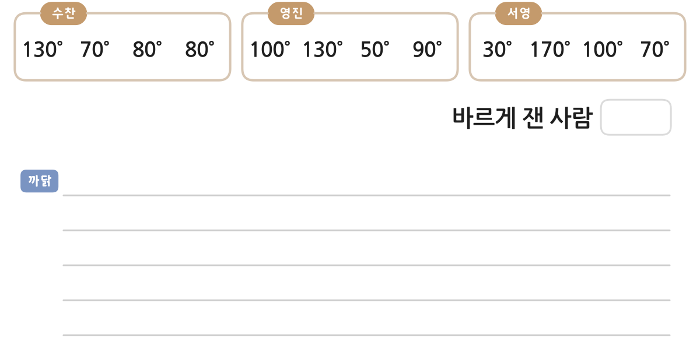

삼각형의 세 각의 크기의 합은 180°인데 민호가 잰 삼각형의 세 각의 크기의 합은 30°+60°+100°=190°이므로 잘못 재었습니다.
한 번 더
1
2
사각형의 네 각의 크기를 바르게 잰 사람을 찾아 쓰고, 그 까닭을 써 보세요.

사각형의 네 각의 크기의 합은 360°인데 수찬이가 잰 사각형의 네 각의 크기의 합은 130°+70°+80°+80°=360°, 영진이가 잰 사각형의 네 각의 크기의 합은 100°+130°+50°+90°=370°, 서영이가 잰 사각형의 네 각의 크기의 합은 30°+170°+100°+70°=370°이므로 수찬이가 바르게 재었습니다.